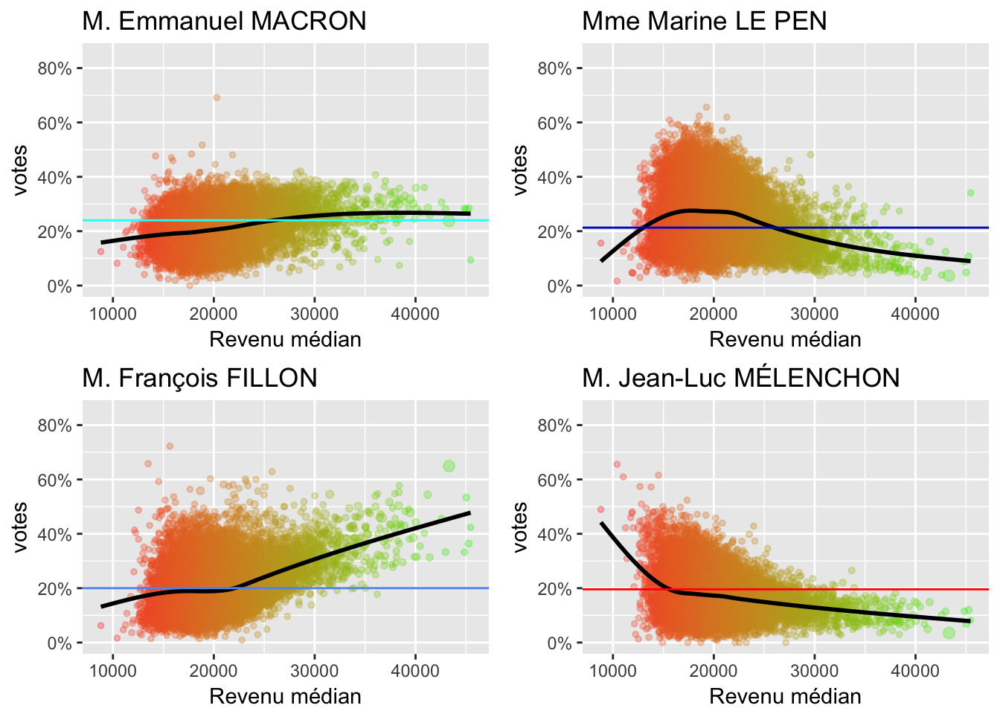
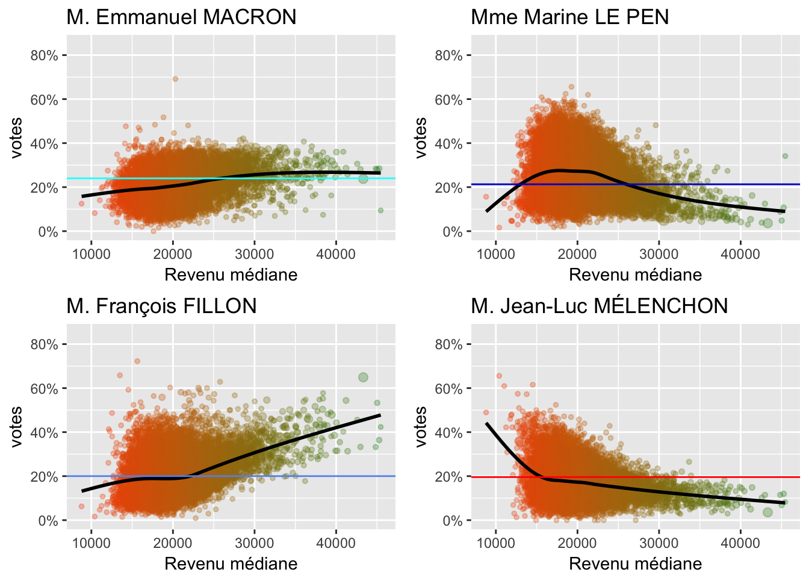

Analyse de l’élection présidentielle 2017
1 Introduction
Pratiquement tous les journaux ont publié des statistiques des résultats du premier tour des élections présidentielles, parfois avec des visualisations par commune. La visualisation de toutes les communes de France donne une carte assez coloriée. De prime abord, ça a l’air impressionnant. Cependant comme je ne connais pas assez bien toutes les communes de France, je n’arrive pas à comprendre la signfication de la visualisation. En revanche, à l’échelle de Paris, c’est plus parlant pour moi:
Pourquoi? parce que je connais certaines caractaristiques des différents arrondissements: niveau de revenu, prix immobilier, niveau d’éducation, etc. Ainsi, pour analyser les résultats de toutes les communes, on peut peut-être visualiser les votes en fonction de ces caractéristiques…
2 Premier tour
Les données sont issues du ministère de l’intérieur, et représentent les votes par commune. Les données démographiques sont celles de 2012, disponibles sur l’insee.
2.1 Statistiques globales
On peut regarder une grande volatilité pour Marine Le Pen.

Le résumé statistique des votes par communes se présente comme suit:
## [1] "CODGEO"
## [2] "Libellé.commune.ou.ARM"
## [3] "Région"
## [4] "Département"
## [5] "Population.en.2012"
## [6] "Population.en.2007"
## [7] "Superficie"
## [8] "Naissances.entre.2007.et.2012"
## [9] "Décès.entre.2007.et.2012"
## [10] "Ménages.en.2012"
## [11] "Nombre.de.naissances.domiciliées.en.2013"
## [12] "Nombre.de.décès.domiciliés.en.2013"
## [13] "Logements.en.2012"
## [14] "Résidences.principales.en.2012"
## [15] "Rés.secondaires.et.logts.occasionnels.en.2012"
## [16] "Logements.vacants.en.2012"
## [17] "Rés.princ.occupées.Propriétaires.en.2012"
## [18] "Nombre.de.ménages.fiscaux.en.2012"
## [19] "Part.des.ménages.fiscaux.imposés..en.2012"
## [20] "Médiane.du.revenu.disponible.par.UC.en.2012"
## [21] "Taux.de.pauvreté.en.2012"
## [22] "Emplois.au.LT.en.2012"
## [23] "Emplois.salariés.au.LT.en.2012"
## [24] "Emplois.au.LT.en.2007"
## [25] "Pop.15.64.ans.en.2012"
## [26] "Chômeurs.15.64.ans.en.2012"
## [27] "Actifs.15.64.ans.en.2012"
## [28] "Total.des.ets.actifs.au.31.décembre.2012"
## [29] "Ets.actifs.agriculture.au.31.12.2012"
## [30] "Ets.actifs.industrie.au.31.12.2012"
## [31] "Ets.actifs.construction.au.31.12.2012"
## [32] "Ets.actifs.commerce.services.au.31.12.2012"
## [33] "Ets.actifs.commerce.réparation.auto.au.31.12.2012"
## [34] "Ets.actifs.adm.publique.au.31.12.2012"
## [35] "Ets.actifs.de.1.à.9.salariés.au.31.décembre.2012"
## [36] "Ets.actifs.10.salariés.ou.plus.au.31.décembre.2012"
## [37] "coordonnees"
## [38] "Abstentions"
## [39] "Blancs"
## [40] "Exprimés"
## [41] "Inscrits"
## [42] "M. Benoît HAMON"
## [43] "M. Emmanuel MACRON"
## [44] "M. François ASSELINEAU"
## [45] "M. François FILLON"
## [46] "M. Jacques CHEMINADE"
## [47] "M. Jean LASSALLE"
## [48] "M. Jean-Luc MÉLENCHON"
## [49] "M. Nicolas DUPONT-AIGNAN"
## [50] "M. Philippe POUTOU"
## [51] "Mme Marine LE PEN"
## [52] "Mme Nathalie ARTHAUD"
## [53] "Nuls"
## [54] "Votants"NB: La moyenne ici est la moyenne des votes par commune. Pour retrouver les moyennes nationales, il faut pondérer par la population.
2.2 Densité de population

Pour cela surcharger le graphique, la taille des points représente la population totale de la commune. La couleur représente le niveau de revenue médiane.
On peut adopter l’échelle logarithmique pour la densité de la population:

2.3 Revenus
Revenue médiane de la commune

Taux de pauvreté

2.4 Emplois
Taux de chômage

2.5 Ménages
Nombre de personnes par foyer

2.6 Logements
Nombre de résidences principales occupées par les propriétaires sur le total des logements

Nombre de résidences secondaires et logements occasionnels sur le total de logements

2.7 Naissances
Nombre de naissances en 2013 sur la population en 2012

2.8 Entreprises
Nombre d’établissements agricoles sur la population en 2012

Nombre d’établissements de commerce et service sur la population en 2012

2.9 Autres
D’autres caractéristiques peuvent ^être intéressantes à étudier: immigration, catégories professionnelles, taux de criminalité, etc.
3 Second tour
4 Formation
4.1 Question
Pourquoi visualiser une carte ? Si c’est pour voir une commune en particulier, on peut tout simplement utiliser une liste.
Certains sites d’interpréter une carte, cependant, il n’est pas facile.
4.2 Sources de données
4.3 Analyse des données
- Si on récupère d’autres caractéristiques des communes, on peut d’autant mieux comprendre le choix
- Cela pourrait se vérifier aussi pour les élections historisques
- On peut ainsi construire un algorithme pour les résultats
- Il est possible d’utiliser les caractéristiques de la population pour d’autres
4.4 Visualisation
Afin de réaliser ce petit projet, les différentes techniques mises en application sont:
- Webscrapping
- Connaissance de la structure des pages html
- Manipulation des codes html
- Manipulation des expressions régulières
- Nettoyage de données
- Manipulation des vecteurs et des
data.frame - Fusion et sélection de données
- Manipulation des vecteurs et des
- Machine learning
- Apprentissage supervisé
- Régression
- Visualisation des données
- Utilisation du package
ggplot2 - Types de visualisation
- Graphiques interactifs
- Formattage des tables
- Utilisation du package
- Outil de production
- Rmarkdown
- htmlwidgets
- Tableaux de bord
Copyright © 2016 Blog de Kezhan Shi